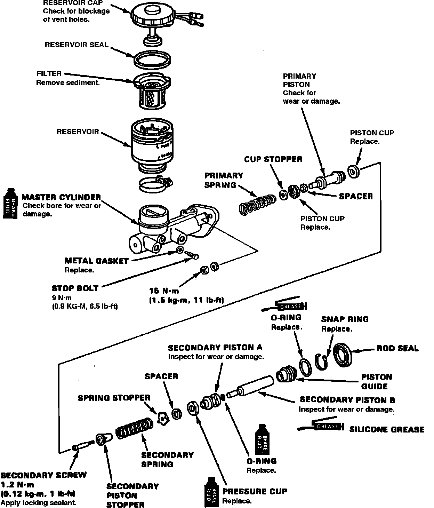
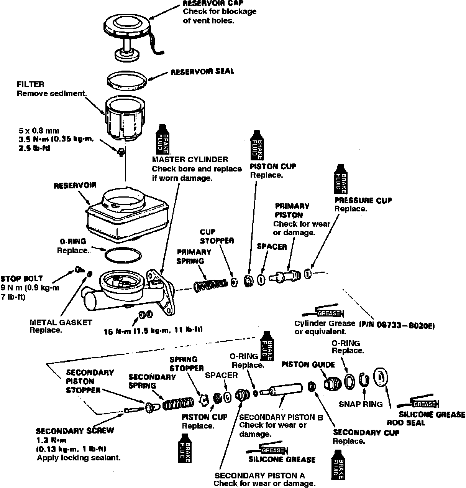

Disassembly and Assembly
The 1991-92 Integra, 1990-92 Legend and 1992 Vigor master cylinders are no longer designed to be rebuilt. If master cylinder if found to be faulty, replace as an assembly.DISASSEMBLE
Fig. 4 Master Cylinder Exploded View:

Fig. 5 Master Cylinder Exploded View:

1. Do not allow brake fluid to come in contact with plastic, rubber or painted parts, as damage may occur.
2. Using suitable shop rag, plug brake end to prevent fluid leakage. Do not allow foreign material to enter system.
3. Remove rod seal.
4. Depress secondary piston assembly, then remove snap ring and stop bolt, Figs. 4 and 5.
5. Remove piston guide, secondary piston and primary piston assemblies. If primary piston assembly is difficult to remove, place shop towel over master cylinder, then apply low pressure compressed air to primary piston side outlet.
6. Remove secondary piston screw, then remove secondary spring.
ASSEMBLE
1. Clean all parts prior to assembly.
2. Use only clean brake fluid.
3. Lubricate piston assemblies, the assemble.
4. Install piston assemblies, rotate pistons while installing.
5. Depress secondary piston, then install stop bolt, new washer and snap ring.
6. Install rod seal.